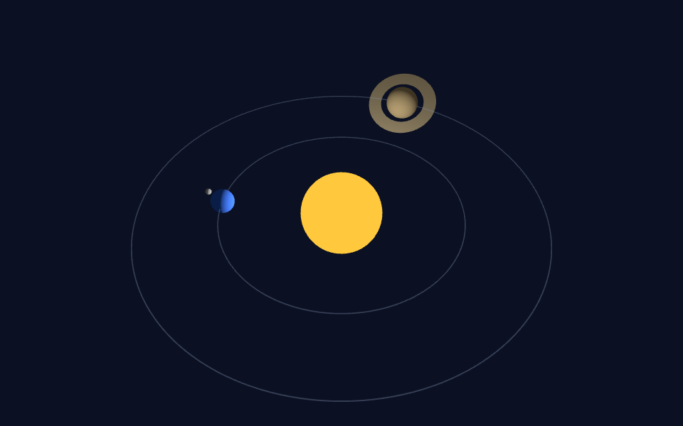

Fácil
Sistema solar
O Sol, a Terra com a Lua e Saturno com o anel, cada um na sua órbita: grupos dentro de grupos, girando juntos.
- Malha: geometria e material
- Material com e sem luz
- Luz pontual e ambiente
- Grafo de cena
- Rotação em radianos
- Animação pelo tempo
- Transparência
- Node.js e Vite
- OrbitControls